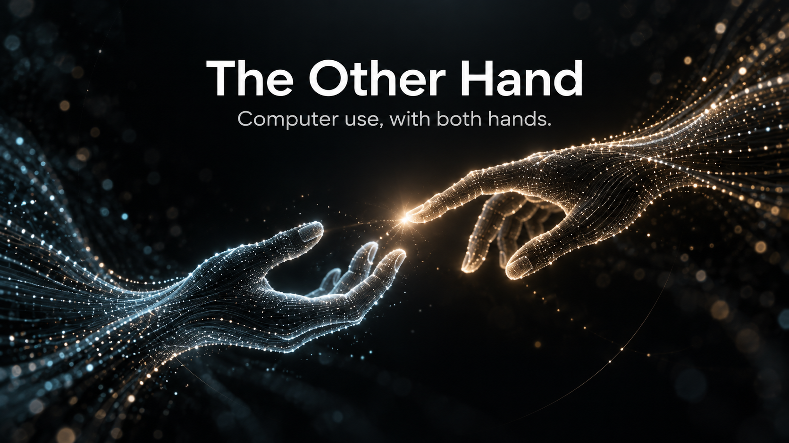
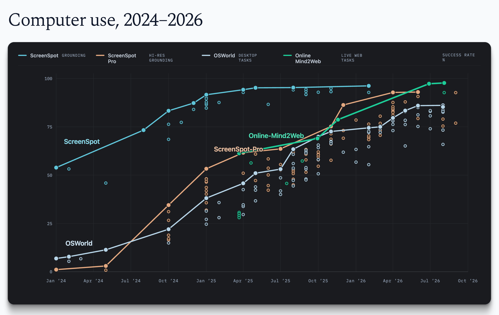

The Other Hand
tldr: Computer use = coding + clicking.

In 2024–25, people debated whether computer use would work.
In 2026, the question is: what's next for computer use?
But before answering that, we need to ask ourselves: what is computer use, really?
The answer starts with how we defined it. We began by teaching models to use computers like us: look at a screen, move a mouse, type on a keyboard. It was the natural place to start. It is, after all, how we use a computer.
But computer use has come a long way in two years. The definition now needs to catch up.
What progress looked like
Two years ago, if you asked a model to pick your departure date, there was a good chance it would click a day early, a day late, or a month off. Sometimes it would, confidently, open the return-date picker. Basically, it was trying to make sure you never left the ground.
The research started with the smallest useful unit of computer use: given an instruction and a screenshot, click the right thing. We first measured this across desktop, web, and mobile, then extended the same test to high-resolution professional software, where the target might be a tiny icon among dozens in a CAD toolbar. If the model can't click the right thing, nothing else matters.
Around the same time, we started testing complete tasks across desktop applications and the live web. An agent might need to find a setting buried several menus deep, gather information from a few websites and organize it in a spreadsheet, or find a hotel for four that meets several constraints and figure out the fastest route from there to the airport.
At this point, clicking accurately was no longer enough. The agent had to carry the goal across many steps, remember what it found early and use it later, keep track of what was done and what wasn't, deal with slow or changing pages, pop-ups, and the occasional bot check, notice when an action failed and recover from it, verify that important actions such as purchases actually went through, and keep trying until the task was done.

For a while, the sentiment was that computer use was moving slowly. (AA, this is what happens when you don't give something a tab :) Now, GUI grounding is effectively solved, and so are tasks that take a person several to tens of minutes and sometimes stretch to a few hours.
So what's left?
The Other Hand
The obvious answer is longer tasks. More steps, more hours. An agent that clicks for longer.
I think this is the wrong answer, because it assumes that the agent should do the task the way a human does it, through a screen.
But that is not always the best way to get real work done. Think about doing our taxes. An agent might pull transactions from several banks through their APIs, and when no API is available, download the forms and extract the numbers from PDFs. It might write a small script to categorize expenses and check the math, and then enter everything into tax software that only has a graphical interface. Code, APIs, and GUIs, all in one task. Remove any one of them, and the task becomes either unnecessarily slower or impossible to complete.
Programmatic and graphical interfaces are both just ways to interact with a computer. In the example above, the agent called an API where one existed, wrote code where that was faster, and clicked where nothing else would work. The best way to use a computer is to use the best interface at each step, and to switch between them seamlessly. Think of it as two hands: coding is one, clicking is the other.
Computer use should mean the whole computer:
Computer use = coding + clicking
Same for computer-use agents (CUA):
CUA = agents that can code and click
And agents that only click are GUI agents.
If that is what computer use means, GUI agents are over. They do everything the slow way. But moving away from GUI agents does not mean moving away from the GUI.
Clicking still matters. The tax software in this example is not unusual. Much of the software we use still has no API, and some of it may never have one. Until that changes, the GUI remains the generalization guarantee: if a person can use the software, an agent can at least use it the same way.
Training both hands together
So we merge the coding and clicking data, and we're done?
No.
For a while, coding and "computer use" were optimized separately. Not separate models, necessarily, but separate teams, separate data, separate action spaces. This worked. Most of what makes an agent good at long tasks transferred from coding to clicking, and I would guess general agent training and GUI-specific work contributed about equally to where "computer use" is today.
What does not transfer is the switch. As soon as agents are measured on tasks where any interface is allowed, the errors show up. Some models keep coding when a short GUI path exists, just slightly hidden. Some click through hundreds of steps that a slightly creative script would have replaced. Some churn between interfaces without meaningful progress on either. They can code. They can click. They can't choose.
Choosing has to be trained, and it can only be trained where it matters. If a task can be finished through one interface, the model learns nothing about when to reach for the other, no matter how many such tasks it sees. What we need are realistic environments that naturally require both hands (luckily, much of knowledge work is of this flavor).
Besides data, we want to treat computer use (not just clicking) as a first-class training target. GPT-6 Astra is an example. OpenAI describes it as "big bets across pre-training, reinforcement learning, and alignment." And the outcome is obvious.

Two frontiers
Computer use will advance on two frontiers.
The first frontier is open-ended knowledge work. This is the obvious one. The hard part isn't compute, quality is. A valuable task has to teach the model to do the work at expert level, which means domain expertise throughout, from coming up with the task to verifying it. A good coding environment already sells for thousands to tens of thousands of dollars. Once training moves to realistic end-to-end knowledge work, I won't be surprised to see RL environments worth hundreds of thousands pretty soon.
The second frontier is digital automation at scale. It gets less attention than it should. Much economically valuable digital work takes the form of small tasks repeated at enormous scale, with inputs that vary too much for simple scripting. Think of validating promo codes across O(10k) websites. Similar tasks exist across healthcare, insurance, finance, consulting, and other industries. Each task may be worth only cents, but together they add up to a very large number. The need here is frontier-level performance, at a cost that justifies the business.
Where this goes
Two more things follow.
Software will change too. The browser already shows what agent-friendly software looks like: a GUI for humans, a DOM for structure, and JavaScript for programmatic control. New software will increasingly ship with both graphical and programmatic interfaces, while existing software will add the latter over time, probably slowly. So models will still need to click, and should be taught to click even better.
And the loop closes. Training for computer use is itself a computer-use task. Models are already used throughout the training loop. During task creation, they interact with applications directly and find out what is actually possible. During verifier testing, their rollouts expose false positives, false negatives, and reward hacks that are hard to catch programmatically. After training, rollouts from the new model reveal new failure modes, which feed the next round of task generation. The model is no longer just the output of training. It is one of the inputs.
End
Two years ago, "computer use" named a research problem: can a model use a computer like us, through the screen? Now it can. That was a milestone, not the destination.
A computer offers much more than its screen. Using a computer should mean using all of it.
Coding is one hand. What we used to call "computer use" is the other.
From now on, computer use means both.